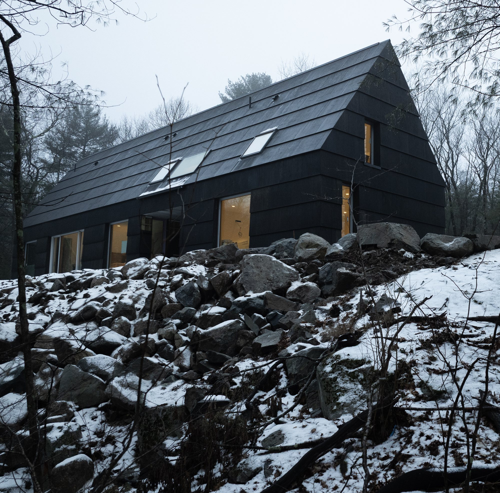
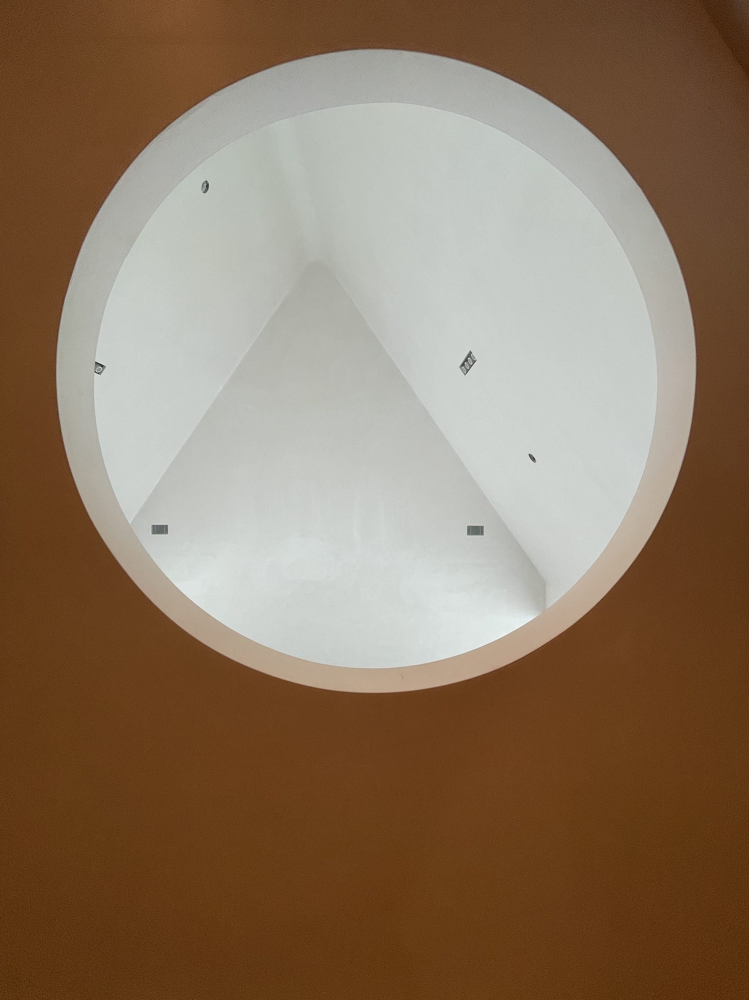
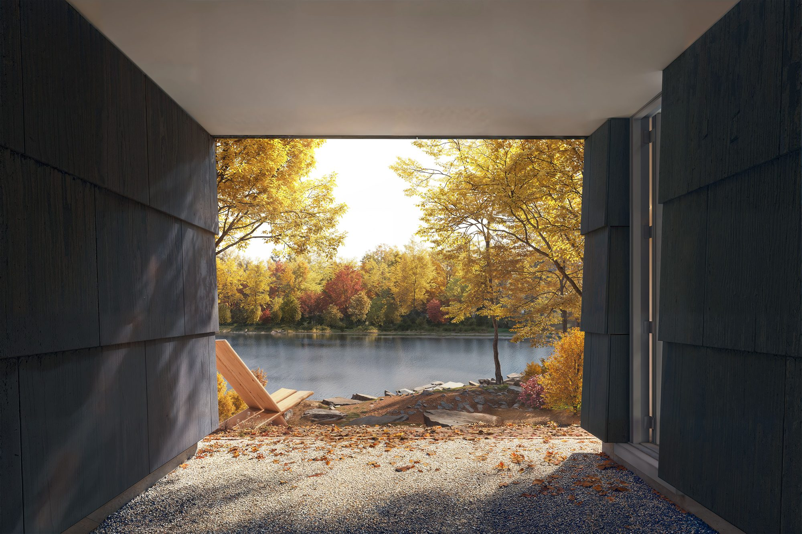
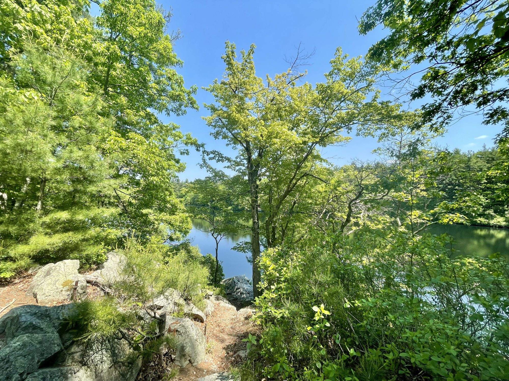
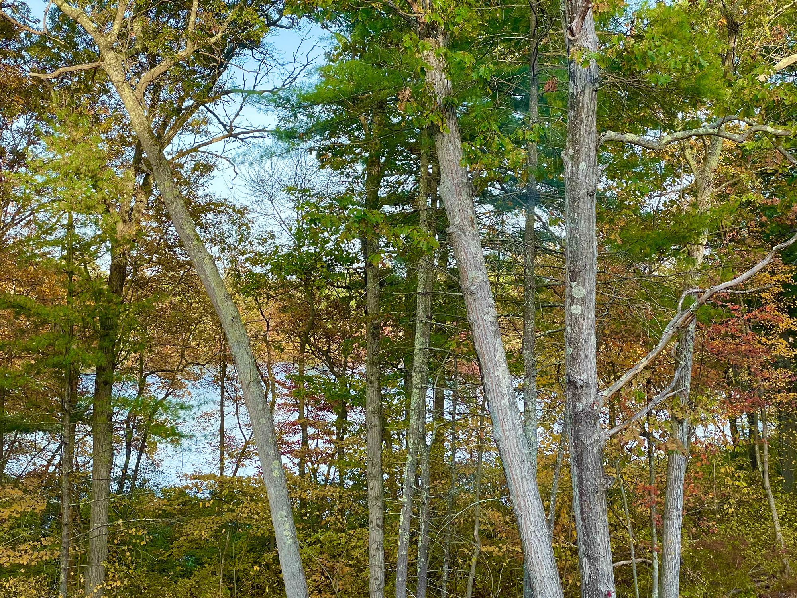
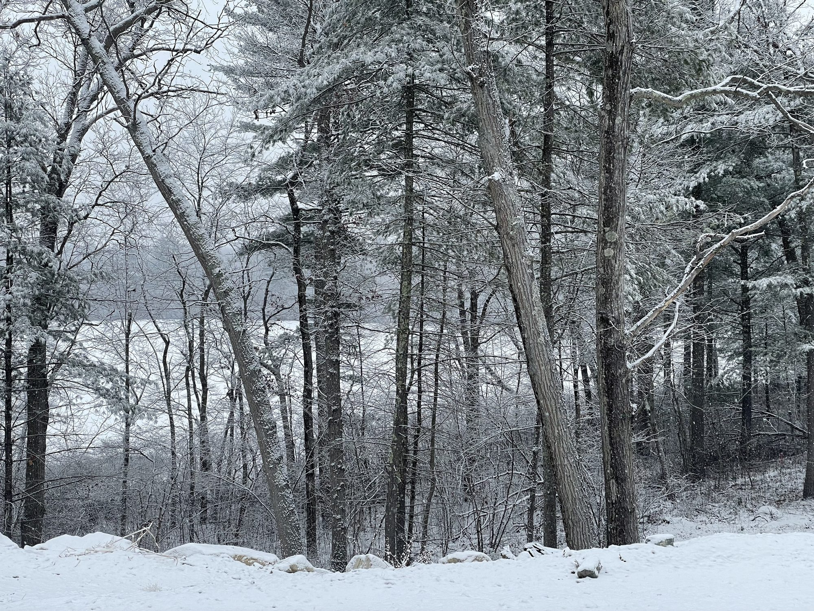
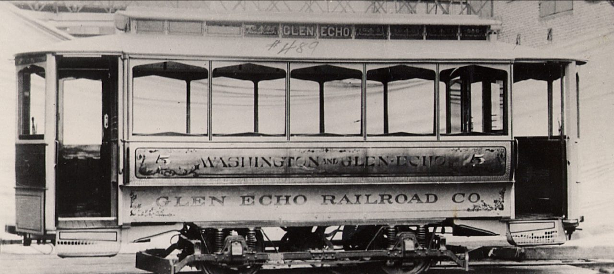
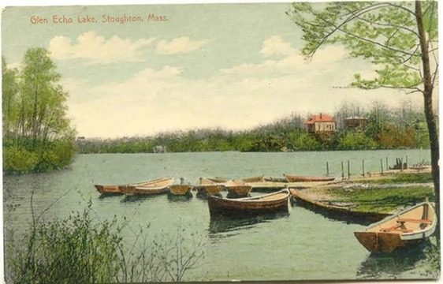
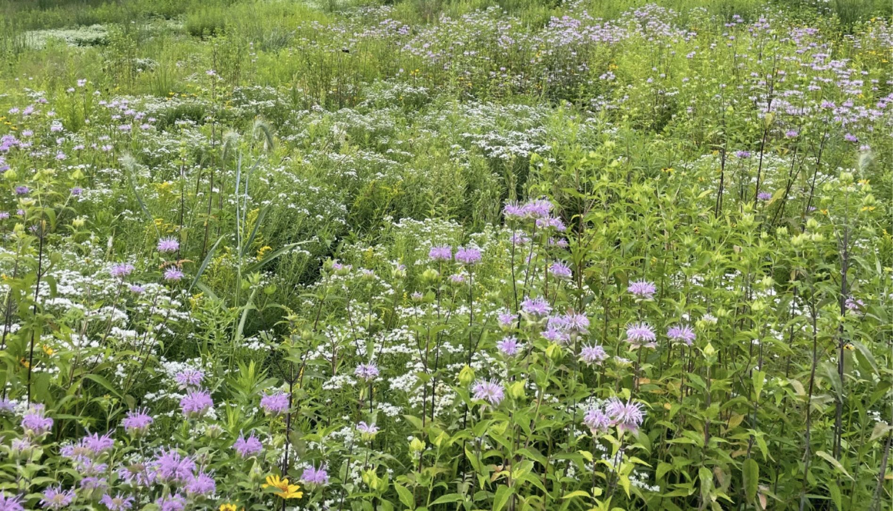

A home deeply rooted in memory, landscape and lineage on the shores of a glacial kettle pond in Massachusetts.
Glen Echo Pond – a glacial kettle pond in New England | Video by Motif Media
Set on eleven acres of wetland forest overlooking Glen Echo Pond in Canton, Massachusetts, Echo Pond is a 2,600-square-foot dwelling that synthesizes Scandinavian design sensibility with New England's vernacular building traditions. Designed by Brooklyn-based practice Of Possible and built by NS Builders, the home stands on a steep slope among glacial boulders, at the edge of protected wetlands.
Echo Pond takes its name from the glacial kettle pond it overlooks, a body of water formed some ten thousand years ago when retreating glaciers left massive ice blocks buried in sand and gravel. As these blocks melted, they created depressions that filled with groundwater rather than streams. The pond is still spring-fed, and the water is clear. Scattered across the hillside above the pond, glacial erratic boulders deposited during the Ice Age became collaborators in the design rather than obstacles to be removed.
For the homeowners, whose grandparents emigrated from Sweden, the project offered an opportunity to create a home that honored both their Nordic heritage and their adopted New England landscape. In sharing their vision, they expressed a desire for a "house-shaped house": the archetypal form of childhood drawings, with a steep pitched roof and simple, honest proportions.
They wanted a home that embodied their family values: grow, serve, simplify, and celebrate. "I keep circling back to a Scandinavian cottage vibe," reflects Alison, one of the homeowners. "A place for people to gather and be, together or alone, that is peaceful and cozy. Less of the modern version, more of the simple, warm version of minimal."
Timelapse Echo Pond construction | Video by Motif Media
Site Response
Approaching through the forest, one might mistake the dark silhouette for a barn or agricultural building that had always been there, settled into the hillside. The oversized shingles, treated to a near-black finish with pine tar, and the steep roof pitch catching morning light look older than they are. Only up close does the precision show.
"The placement of the home near these boulders serves as a physical and visual link between the house and the ancient geology of the site," explains Vincent Appel, principal of Of Possible. "In Scandinavian architecture, we often see this deep connection to the landscape, and we wanted to bring that sensibility to this project."
The house banks into the hillside, presenting a modest face to the approach while opening dramatically to the pond. This strategy, employed by Marcel Breuer in his New England work decades earlier, allows the dwelling to echo the topography, mediating between the intimacy of arrival and the expansiveness of the water. Large windows frame the pond to the east; narrow vertical openings on the north side offer glimpses of the wetlands, sustaining connection to the land while maintaining privacy.

Glacial erratic boulders became collaborators in the design | Photo by Motif Media
Material Philosophy
The signature material is the megashingle: an oversized shingle of marine-grade plywood, half of a four-by-eight sheet, sealed with pine tar. The scale creates a monolithic form where walls and roof read as continuous surface, while the pine tar treatment bridges Scandinavian and New England maritime heritage, from Viking longships to colonial shipyards.
Pine tar production in Scandinavia dates to at least 540 BCE, and the material became synonymous with quality through Sweden's royal monopoly. In New England, tar was so essential to the maritime economy that by 1704, New Hampshire law allowed taxes to be paid in tar instead of currency. The choice of material, then, is not merely aesthetic but historical: it recognizes the Nordic reference as already present in New England's own material traditions.
The pine-tarred megashingles create a unified monolithic form | Video by Motif Media
"The pine tar treatment not only protects the wood but gives it incredible depth and texture that changes with the light and seasons."
Pine-tarred marine-grade plywood shingles, designed to deepen with age | Video by Motif Media
Spatial Experience
Cross the threshold and the house inverts itself. The dark, nearly mute exterior gives way to luminous interiors filled with natural light. An open plan with muted tones expands the sense of space while maintaining warmth. Concrete floors ground the rooms with mass and permanence. White oak cabinetry adds warm tones, and a built-in banquette nestled beside a nine-by-nine-foot window opening to the pond offers the coziness of a favorite restaurant booth, at home.

A large circular opening on the second floor overlooking the main living space | Photo by Motif Media

The breezeway connecting dwelling and studio | Image by Darc Studio
On the second floor, a large circular opening, from a room the homeowners affectionately call "the birdhouse," looks down into the main living space below, creating a vertical connection between levels that amplifies the sense of openness. Large roof windows in the steep pitch bring natural light into the upstairs bedrooms, tracking the sun across interior surfaces throughout the day. Morning light enters at one angle, afternoon at another, marking the passage of hours and the turning of seasons. At sunrise the sun appears twice: once over the far shore and again in the still water.
The breezeway connecting the main house to an adjoining studio echoes the connected farmsteads of Northern New England, where a sequence of structures allowed farmers to move from house to barn without venturing into winter storms. Here, the connection is open to weather: a threshold space requiring passage through landscape to move between living and working. Its open sides allow unobstructed views of Glen Echo Pond while the roof provides protection during winter.
Spring

Summer

Autumn

Winter
Heritage and Memory
The site carries layers of history beyond the glacial. In the 1890s, entrepreneur Elisha C. Monk transformed the pond, then known as York Pond, into Glen Echo Resort, a destination featuring a dance pavilion, bowling alley, bathhouses, and boating that drew visitors from Boston via the trolley line from Mattapan. No alcohol was allowed; families came by the hundreds on summer weekends.

The trolley from Mattapan

Boating on the pond
The Great Depression bankrupted the resort; the Gibson family ran it for decades before fires destroyed all its buildings in the late 1980s. In the 2010s, the town of Stoughton acquired the adjacent 97-acre property for conservation, creating a seamless landscape between private dwelling and public parkland.
Echo Pond now keeps watch over this recovered commons: a contemporary dwelling overlooking land that has cycled through glacial formation, Victorian leisure, abandonment, and civic reclamation. The layered history is not incidental to the architecture; it is the ground from which the design grows.
New England's modernist architects gravitated toward what others dismissed as unbuildable: steep slopes, rocky outcroppings, terrain that defied the leveled agrarian plots of earlier centuries. The discipline of working with difficult land, rather than against it, produced buildings that echoed topography and settled into landscape as if they had always been there.
Echo Pond continues this tradition. The glacial boulders scattered across the hillside, the severe grade dropping toward the pond, the protected wetlands constraining footprint: these decided where the house could stand.
The landscape design, by Terry Fitzpatrick of Dialogue-Environment Studio, extends this philosophy across the 11-acre property. A gradient-based ecological approach deploys four native seed mixes calibrated to site-specific conditions of slope, hydrology, and sun exposure, initiating a process the land will complete on its own terms.
Regional ecotypes sourced from Pennsylvania, Rhode Island, and Ohio ensure seasonal bloom from spring through late fall. No irrigation, fertilization, or pesticides. Like the house it surrounds, the landscape is designed to mature into something self-sustaining, to become more itself over time.

Image of showy meadow seed mix from Ernst Seed
From the siting that preserves wetlands to the materials connecting Nordic and New England maritime traditions, the project began with the land, its history, and the people who would live there. It is a home designed to grow more beautiful as it weathers. The pine tar will deepen. The meadow is only beginning.